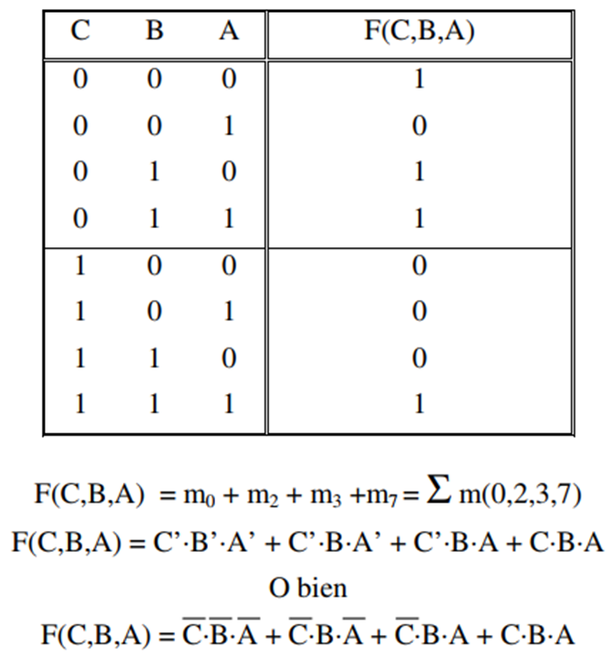
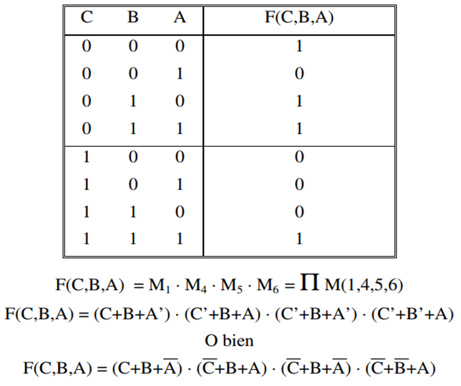

UN ÁLGEBRA DE BOOLE ES UN SISTEMA DE ELEMENTOS B={0,1} Y LOS OPERADORES BINARIOS (·) y (+) y (’)
- OPERADOR + -> OPERADOR OR
- OPERADOR · -> OPERADOR AND
- OPERADOR ‘ -> OPERADOR NOT
QUE CUMPLEN LAS SIGUIENTES PROPIEDADES:
PROPIEDAD CONMUTATIVA:
- A + B = B + A
- A · B = B · A
PROPIEDAD DISTRIBUTIVA:
- A·(B+C) = A·B + A·C
- A + B·C = (A+B)·(A+C)
ELEMENTOS NEUTROS DIFERENTES:
- A + 0 = A
- A · 1 = A
SIEMPRE EXISTE EL COMPLEMENTO DE A, DENOMINADO A’:
- A + A’ = 1
- A · A’ = 0
Principio de dualidad
Cualquier teorema o identidad algebraica deducible de los postulados anteriores puede transformarse en un segundo teorema o identidad válida sin mas que intercambiar (+) por (·) y 1 por 0.
Constante
Cualquier elemento del conjunto B
TEOREMAS DEL ÁLGEBRA DE BOOLE
TEOREMA 1
el elemento complemento A’ es único.
TEOREMA 2 (ELEMENTOS NULOS)
para cada elemento de B se verifica:
TEOREMA 3
cada elemento identidad es el complemento del otro.
TEOREMA 4 (IDEMPOTENCIA)
para cada elemento de B, se verifica:
TEOREMA 5 (INVOLUCIÓN)
para cada elemento de B, se verifica:
TEOREMA 6 (ABSORCIÓN)
para cada par de elementos de B, se verifica:
TEOREMA 7
para cada par de elementos de B, se verifica:
- A + A’·B = A + B
- A · (A’ + B) = A · B
TEOREMA 8 (ASOCIATIVIDAD)
cada uno de los operadores binarios (+) y
(·) cumple la propiedad asociativa:
- A+(B+C) = (A+B)+C
- A·(B·C) = (A·B)·C
LEYES DE DEMORGAN
para cada par de elementos de B, se verifica:
- (A+B)’ = A’·B’
- (A·B)’ = A’ + B’
REPRESENTACIÓN DE FUNCIONES LÓGICAS (I)
TABLA DE VERDAD
Tabla que representa el valor de la función para cada combinación de entrada. Si la función está definida para todas las combinaciones se llama completa, si no, se denomina incompleta.
Una Fórmulas de conmutación es la expresión de una función Lógica.
Un LITERAL es una variable (A) o complemento de una variable (A’)
- Un TÉRMINO PRODUCTO es una operación AND de un número de
literales.
- Una fórmula normal disyuntiva es una suma de términos productos.
- Un TÉRMINO SUMA es una operación OR de un número de literales.
REPRESENTACIÓN DE FUNCIONES LÓGICAS (II)
FÓRMULA CANÓNICA DISYUNTIVA (SOP)
- MINTÉRMINO (mi): término producto en el que aparecen todas las
variables, ya sean complementadas o sin complementar.
- FÓRMULA CANÓNICA DISYUNTIVA O DE MINTÉRMINOS: suma de mintérminos. (Suma de Productos)
Dada la lista completa de mintérminos y asignando 1’s y 0’s
arbitrariamente a las variables, siempre hay un, y sólo un, mintérmino que
toma el valor 1.
Un mintérmino es un término producto que es 1 exactamente en una línea
de la tabla de Verdad.
La fórmula compuesta por todos los mintérminos será idénticamente 1.
Cada fórmula de conmutación puede expresarse como suma de
mintérminos. Y esa fórmula es única.
NOTACIÓN: Un mintérmino se designa por “mi” siendo i el número
decimal correspondiente de la tabla de verdad. Para el producto, el 0 se
asocia a la variable complementada y el 1 a la variable sin complementar.
Ejemplo

REPRESENTACIÓN DE FUNCIONES LÓGICAS (III)
FÓRMULA CANÓNICA CONJUNTIVA (POS)
- MAXTÉRMINO (Mi): término suma en el que aparecen todas las variables,
ya sean complementadas o sin complementar.
- Fórmula Canónica Conjuntiva o de Maxtérminos: producto de maxtérminos. (Producto de sumas).
Dada la lista completa de maxtérminos y asignando 1’s y 0’s arbitrariamente a las variables, siempre hay un y sólo un maxtérmino que
toma el valor 0.
Un maxtérmino es un término suma que es 0 exactamente en una línea de
la tabla de verdad.
La fórmula compuesta por todos los maxtérminos será idénticamente 0.
Cada fórmula puede expresarse como producto de maxtérminos. Y es
única.
NOTACIÓN: Un maxtérmino se designa por “Mi” siendo i el número
decimal correspondiente de la tabla de verdad. En la suma, el 1 se asocia a
la variable complementada y el 0 a la variable sin complementar.
E
Ejemplo

REPRESENTACIÓN DE FUNCIONES LÓGICAS (IV)
CONVERSIÓN Y MANIPULACIÓN DE FÓRMULAS
El complemento de una fórmula de mintérminos está formado por la suma de
los mintérminos que no aparecen.
El complemento de una fórmula de maxtérminos está formado por el producto de los maxtérminos que no aparecen.
La transformación de una fórmula de mintérminos (disyuntiva) en otra de
maxtérminos (conjuntiva) se basa en la doble complementación,
Para FUNCIONES INCOMPLETAS en la tabla de verdad aparecerá una X o
una letra d (del inglés don’t care) refiriéndose a términos sin especificar.
Complemento de una función incompleta: otra función incompleta con los
mismos términos “no importa” y el complemento de la función completa.
Las fórmulas de mintérminos y de maxtérminos de las funciones incompletas no
son únicas.